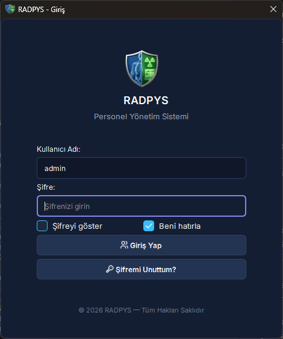
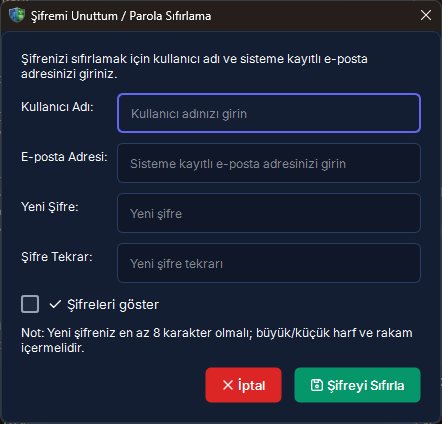
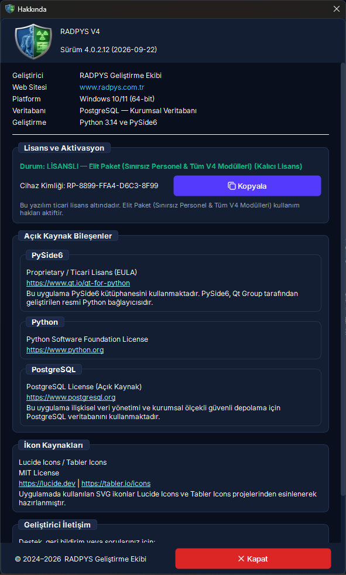
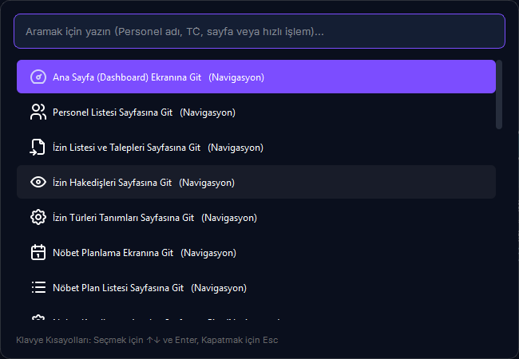

Kurulum, Başlatma ve İlk Giriş
RADPYS masaüstü ve Web Portalı oturumlarını güvenli tekil kilit altında başlatma, veritabanı servisi kontrolleri, ilk girişte zorunlu şifre yenileme, Evrensel Arama Komut Paleti (Ctrl+K), Bildirim Merkezi ve lisans aktivasyonunu yönetmenizi sağlar.
Kısa Reçete: İlk Giriş ve Zorunlu Şifre Güncelleme
Birim sorumlunuzdan veya yöneticiden aldığınız geçici şifreyi kalıcı ve güvenli kişisel parolanızla değiştirerek yetkili olduğunuz modülleri açmak.
Kullanıcı adınız ve geçici parolanızla [Giriş Yap] butonuna basın. Açılan zorunlu şifre penceresinde en az 8 karakter (büyük harf, küçük harf ve rakam) içeren yeni şifrenizi iki kez yazıp [Kaydet] butonuna tıklayın.
Geçici şifre kalıcı olarak iptal edilir; yeni şifre yalnızca size özel şifrelenerek kaydedilir ve yetkiniz dahilindeki tüm ekranlar kullanıma açılır.
5N1K Kural ve Arayüz Çözümleme Tablosu
Giriş ekranı güvenlik kalkanları, şifre sıfırlama sınırları ve bildirim kontrolleri.
Kritik Sahada Yanlış Bilinen Kurallar (Mit Avcısı)
Süreç Akış Şeması
Var mı?"} B -->|Evet| C["Mevcut Pencere Öne Getirilir"] B -->|Hayır| D{"Veritabanı Bağlantısı
Hazır mı?"} D -->|Hayır| E["Yönetici İzniyle Servis Başlatma
veya Yeniden Dene"] E --> D end subgraph S2 ["2. AŞAMA: KİMLİK, KİLİT VE LİSANS DENETİMİ"] direction LR F["Kullanıcı Adı & Parola Girilir"] --> G{"Doğrulama Başarılı
ve Kilit Yok mu?"} G -->|5 Hatalı Deneme| H["15 Dakika Geçici Hesap Kilidi"] G -->|Doğru| I{"Kurum Lisansı
Geçerli mi?"} I -->|Dolmuş - Personel| J["Erişim Engellenir"] I -->|Dolmuş - Admin| K["Kısıtlı Lisans Aktivasyon Modu"] end subgraph S3 ["3. AŞAMA: ŞİFRE GÜVENLİĞİ VE OTURUM"] direction LR L{"İlk Giriş veya
Süreli Değişim mi?"} -->|Evet| M["Zorunlu Şifre Değiştirme Formu"] M -->|İptal| F M -->|Kaydedildi| N(["Yetkili Ana Ekran Açılır"]) L -->|Hayır| N end D -->|Evet| F I -->|Geçerli| L
- Başlatma ve Veritabanı Kontrolü: Program tekil kilit altında açılır; veritabanı motoru durmuşsa kullanıcıya tek tıkla yönetici yetkisiyle servisi başlatma seçeneği sunulur.
- Kimlik, Kilit ve Lisans Denetimi: 5 hatalı girişte hesap 15 dakika kilitlenir; lisansı dolan kurumda normal kullanıcı girişi engellenirken Sistem Yöneticisi için yalnızca lisans yükleme ekranı açılır.
- Şifre Güvenliği ve Oturum Açılışı: İlk girişte zorunlu şifre değişimi tamamlanmadan ana ekrana geçilmez; onaylandığında yetki ve kapsam matrisine uygun modüller yüklenir.
Arayüz Ekran Görünümleri




Adım Adım İşlem Rehberi
1. Masaüstü Uygulamasında Hızlı Arama (Ctrl+K), Lisans Aktivasyonu ve Destek Paketi
- Oturum açtıktan sonra herhangi bir ekrandayken klavyeden Ctrl+K tuşlarına basın; en az 2 harf yazarak yetkili olduğunuz modüllere veya personel kayıtlarına doğrudan geçiş yapın.
- Kurum lisansını etkinleştirmek için yöneticinizle [Hakkında] penceresindeki [Lisans ve Aktivasyon] sekmesini açın ve [Cihaz Kimliği (Machine ID)] yanındaki [Kopyala] butonuna basın.
- Size iletilen lisans dosyasını [Lisans Dosyası Seç (.lic)] butonuyla yükleyin veya anahtar kodunu yapıştırıp [Lisansı Aktifleştir] butonuna tıklayın (aktif lisansta yenileme için [Lisansı Güncelle / Yeni Dosya Seç (.lic)] butonunu kullanın).
- Teknik destek gerektiğinde [Hakkında] penceresindeki [Destek Paketi (ZIP)] butonuna basarak Masaüstünüze oluşturulan destek arşivini teknik ekibe iletin.
2. Web Portalı Girişi ve Dış Ağ İki Aşamalı Doğrulaması
- Kurum içi veya dış ağ tarayıcınızdan Web Portalı giriş ekranını açıp kullanıcı adınız ve parolanızla giriş yapın.
- İlk kez giriş yapıyorsanız açılan zorunlu şifre belirleme formunda yeni parolanızı tanımlayın.
- Hastane dış ağından bağlanıyorsanız ekrandaki güvenlik doğrulamasını tamamlayın; kurumsal 2FA açıksa e-posta adresinize gelen 6 haneli tek kullanımlık doğrulama kodunu girerek oturumu açın.
Sıkça Sorulan Sorular (SSS)
Veritabanı bağlantı hatası aldığımda ne yapmalıyım?
Açılışta ekrana gelen uyarı penceresinde yönetici izniyle servisi başlatma seçeneğine tıklayıp Windows izin onayını verin. Servis otomatik başlatılamazsa Windows Hizmetler ekranından PostgreSQL hizmetinin çalışır durumda olduğunu kontrol edin.
Lisans süresi dolduğunda kayıtlı verilerimiz silinir mi?
Sistemde kayıtlı e-postam yoksa veya dış ağdaysam şifremi nasıl sıfırlarım?
Güvenlik gereği Web Portalındaki [Şifremi Unuttum?] sihirbazı yalnızca hastane yerel ağında aktiftir ve sistemde e-posta adresi tanımlı kullanıcılar için çalışır. E-postanız kayıtlı değilse veya dış ağdaysanız Sistem Yöneticinize başvurarak yeni geçici şifre talep ediniz.